NAS（13）—— Navidrome + MusicTag 音乐管理
Navidrome
概述
Navidrome 是一款全功能、开源且支持多平台的音乐服务器应用程序，可以在 MacOS、Linux、Windows 以及 Docker 等平台上运行。它支持常见的音频格式如 MP3、FLAC 和 WAV，并提供了丰富的管理工具和服务。通过 Web 界面或 API，你可以轻松管理和访问你的音乐库。
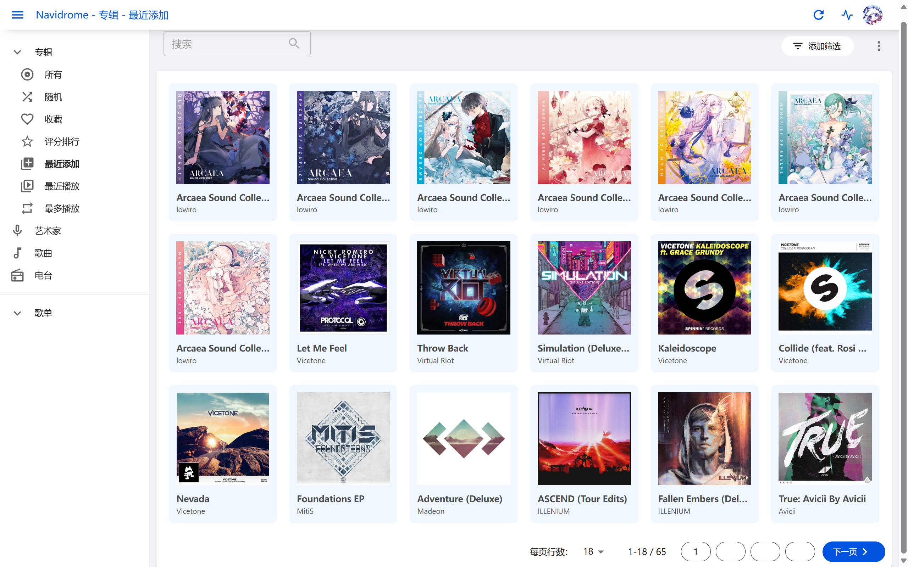
通过 Docker 部署
使用 Docker Compose：
1 | services: |
在user部分，Navidrome 不建议使用root用户运行。
在volumes文件夹挂载部分，官方建议为音乐文件夹设置只读:ro标记以保证不修改音乐文件。
配置
Spotify（若无账户可跳过）
可以用于显示歌手头像（Last.fm 在 v0.54.1 后已支持）。你需要先创建一个 Spotify 账户，随后在https://developer.spotify.com/dashboard/applications中 Create app 创建一个应用。
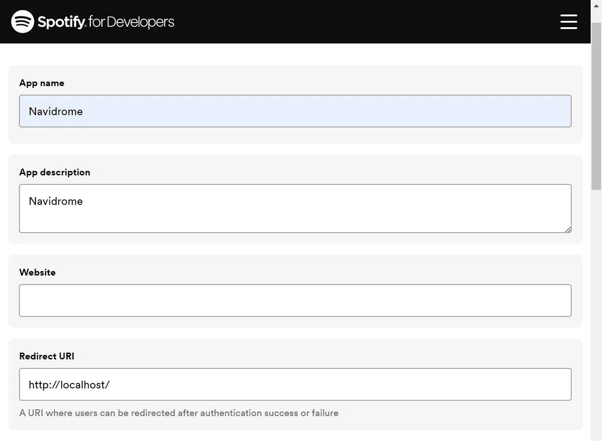
需填写 App name、App description 以及 Redirect URI 这三处，Redirect URI 填入http://localhost/。
随后返回控制台，点击应用，进入应用设置，即可获取Client ID和Client secret。对应填入环境变量中的ND_SPOTIFY_ID和ND_SPOTIFY_SECRET。
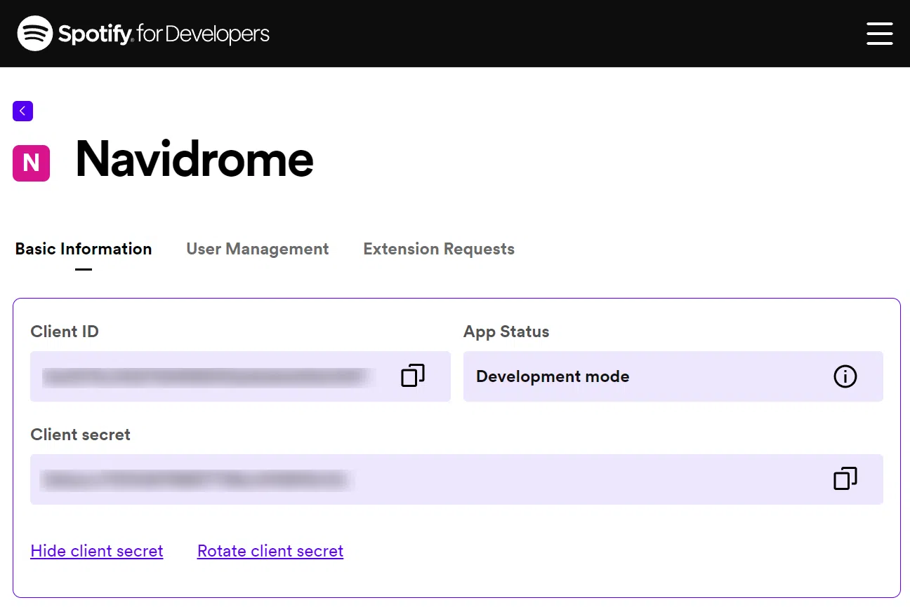
Last.fm
可以用于显示歌手简介、歌手头像、热门歌曲等相关信息。同样先创建一个Last.fm帐户，前往https://www.last.fm/zh/api/account/create创建 API 帐户，只用填写应用名称。提交后在API 应用程序页面复制粘贴 Key 和 Secret 到环境变量即可。
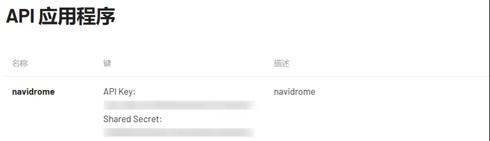
音乐刮削
对于一首歌曲，一般需要这些信息（我们称为元数据，类似于照片的 EXIF 信息）来进行合理的组织：
- 歌曲名
- 艺术家：多个艺术家之间，我们使用半角逗号进行连接
- 专辑名
- 专辑艺术家：多个艺术家之间，我们使用半角逗号进行连接
- 歌词：需要标注每行歌词对应歌曲的时间点
- 专辑封面：用于在应用中展示
- 光盘编号：用于标识歌曲属于专辑中的第几张光盘
- 音轨号：用于标识歌曲属于光盘当中的第几首
- 总音轨数：用于标识光盘中共有多少歌曲
- 总光盘数：用于标识专辑中共有多少光盘
- 播放信息：包括时长、比特率、采样率、位深度、声道等
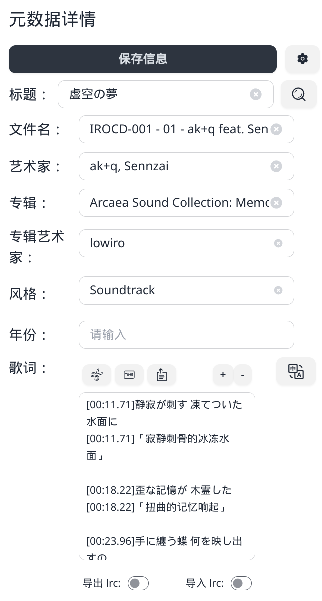
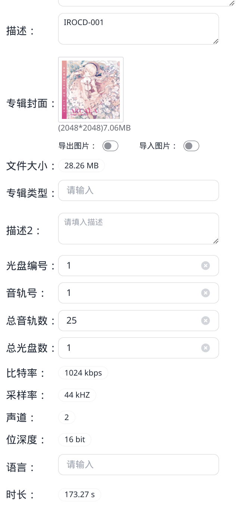
音乐刮削一直是一个很麻烦的问题，包括但不限于以下几点：
- 专辑混杂
- 如 A、A（Remix）、A（2016）等，有时它们是一张专辑，有时不是
- 歌手 / 制作人混杂
- 如 A feat. B、A & B 等，会被误认为一个新的歌手 / 制作人名
- 分部刻录光盘
- 如 Disc 1、Disc 2 等，需将这两部分歌曲放在同一张专辑，但又要区分开来
换句话说，如果我们能指明每首歌曲属于某一张专辑的第几张光盘的第几首，我们就能将其组织起来。
MusicTag
概述
为了解决 Navidrome 挂削不力的问题，我们可以使用 MusicTag 项目。
MusicTag Web 版是一款可以编辑歌曲的标题，专辑，艺术家，歌词，封面等信息的音乐标签编辑器程序， 支持 FLAC，APE，WAV，AIFF，WV，TTA，MP3，M4A，OGG，MPC，OPUS，WMA，DSF，DFF，MP4 等音频格式。
目前 v2 版本需要付费，v1 版本可以免费使用。（v2 和 v1 是同一个镜像，只是端口不同，好神奇的操作）
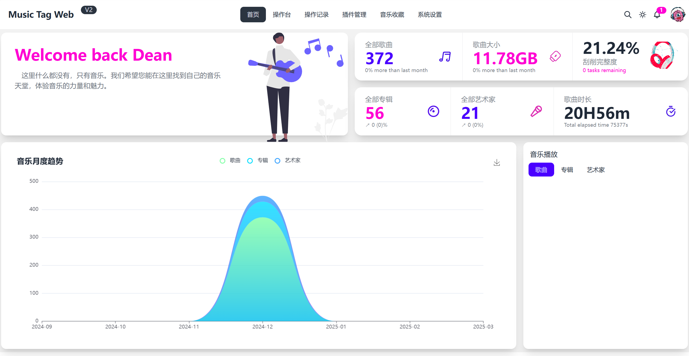
通过 Docker 部署（v2）
1 | version: '3' |
通过 Docker 部署（v1）
1 | version: '3' |
使用
从 PT 迁移
由于 MusicTag 的操作涉及到对歌曲元数据的修改，整理过后歌曲的 Hash 值会发生改变，导致无法做种。和影视资源相比，音乐资源占用的空间相对较少，所以我们可以将想要加入音乐库的文件复制一份到 Navidrome / MusicTag 的工作目录，原文件就可以继续做种。
**不建议使用“整理文件”功能。**一般而言，从 PT 站下载的音乐文件，一个文件夹基本代表了一张专辑。而 MusicTag 的整理文件功能是按照艺术家 - 专辑 - 歌曲的逻辑进行的，会使得我们的整理工作前功尽弃。
自动刮削
进入 MusicTag 页面，我们可以看到：左侧是待处理的文件 / 文件夹，中间是支持的部分操作。
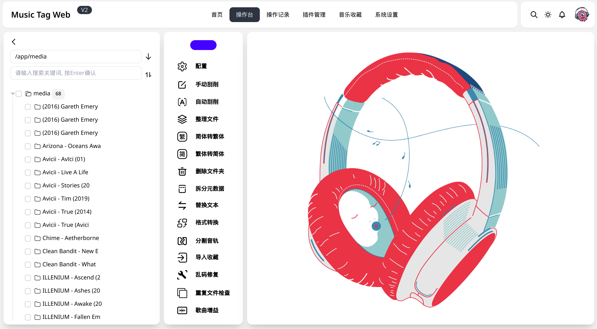
第一次使用，我们推荐先勾选左侧全部文件夹，进行“自动刮削”：
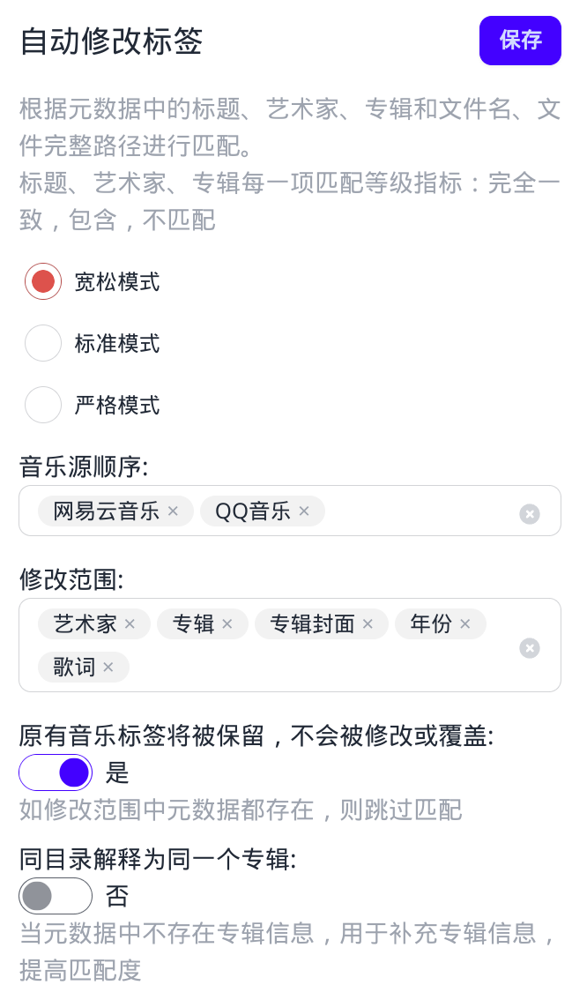
- 宽松模式：至少存在一个完全一致和一个包含，但也优先选完全一致
- 标准模式：三个指标必须为包含或完全一致，但也优先选完全一致
- 严格模式：三个指标必须都为完全一致
这里推荐选择标准模式或宽松模式进行第一次自动刮削。对于之后新入库的文件，我们也可以先勾选以进行自动刮削。刮削过程中可以在后台查看刮削报告。
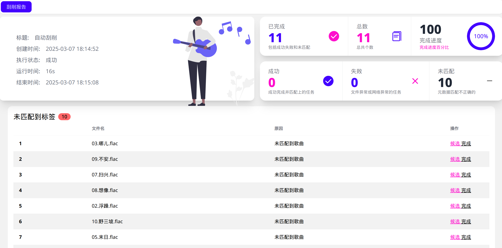
手动刮削
对于未匹配到的歌曲，我们可以点击“候选”来挑选可能匹配的元数据。选择的原则：
- 歌曲名、艺术家名、专辑名准确
- 音轨号 / CD 号须完全正确
- 专辑封面一致
- 尽量选择同一个来源（如均为 netease）
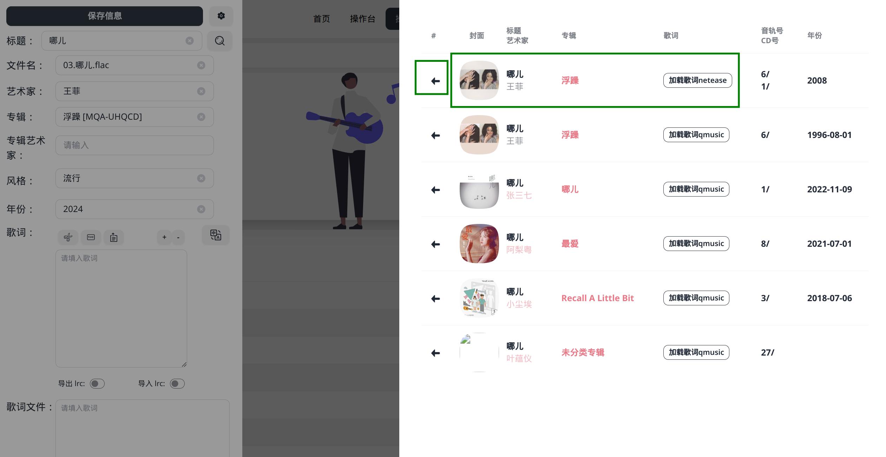
我们还可以在主界面的左侧直接打开某个文件夹。未完全刮削的歌曲会显示红色。
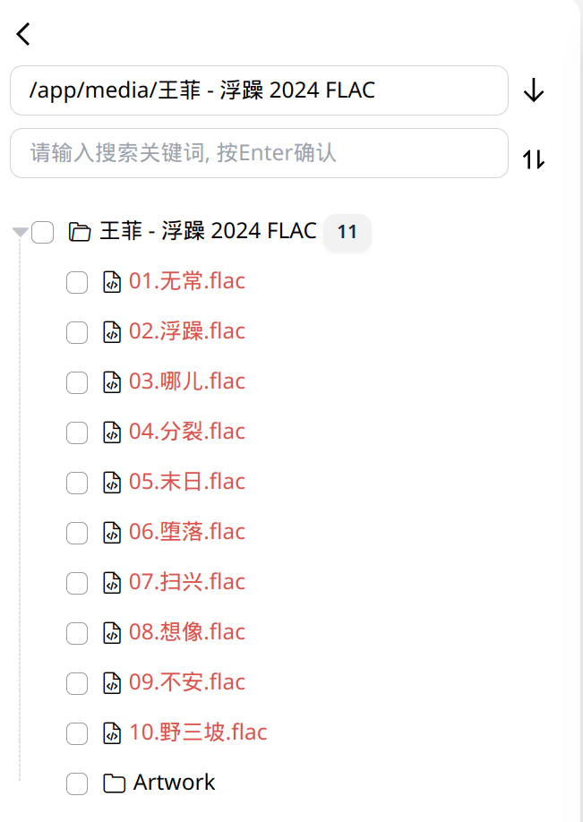
打开元数据详情，点击标题旁的“搜索”按钮，在右侧选择相匹配的元数据。搜索的技巧：
- 搜索匹配的主要为：标题、艺术家、专辑
- 如果没有匹配的歌曲，可以尝试：
- 删除名称当中的特殊字符
- 只保留一个艺术家（或将 feat. 等形式手动修改为半角逗号连接）
- 仅搜索标题 / 艺术家 / 专辑（其他两个留空）
- 最好仅保留一个主要的标签来源（避免混淆）
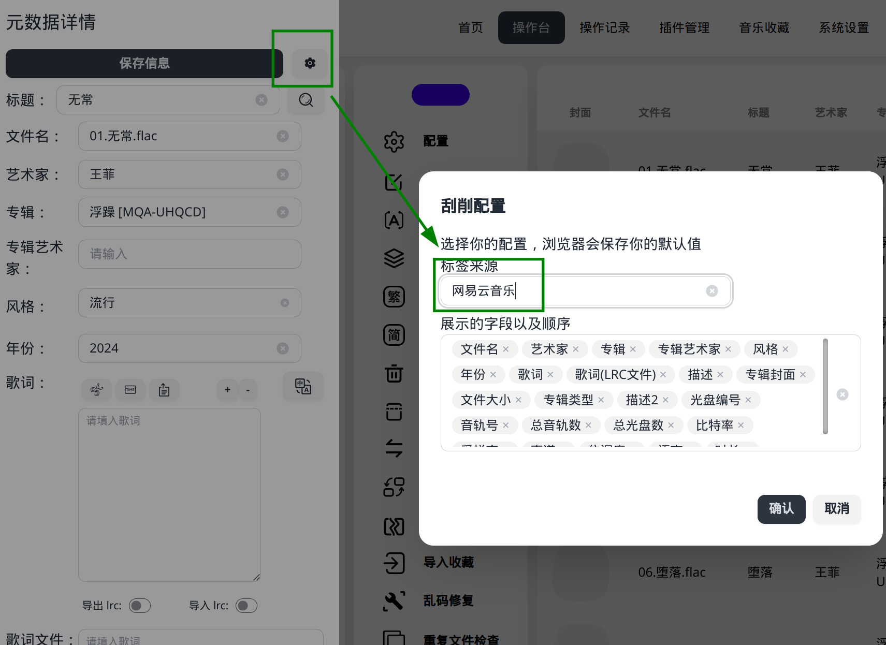
在歌词一栏，我们还可以点击“翻译”按钮，这样会添加同一时间轴的翻译歌词，在 Navidrome 当中可以显示出来。
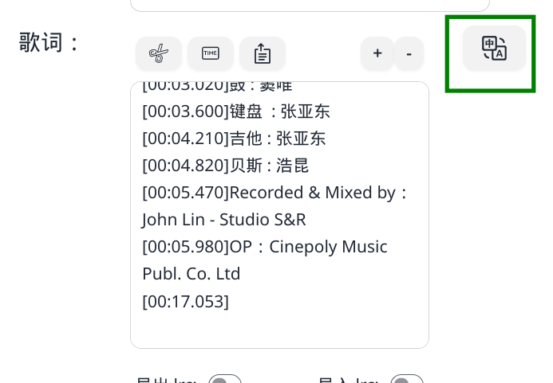
其他提示
另外，Navidrome 对于多艺术家的支持不是很好。当多个艺术家通过半角逗号的方式连接时，Navidrome 只会选取第一个艺术家显示。如果某专辑主要由一位艺术家完成，在刮削完后需要将其排在歌曲艺术家的第一个，否则可能会被 Navidrome 错误地识别成多个不同的专辑。
Navidrome 在v0.55.0当中已支持多艺术家。这是一次较大重构的更新，在更新之前请做好迁移工作。
MusicTag 还有很多非常强大的功能，请各位自行探索。
其他客户端
音流
「音流」是一款国人开发的音乐播放器，支持 Subsonic / Navidrome / Jellyfin / Emby / AudioStation，现已登录 Android、iOS、Windows、MacOS 平台。音流采用 Flutter 开发，界面简洁美观，整体以透明和高斯模糊为主，布局类似于网易云音乐，支持主线路和备用线路连接，上手基本没有门槛。你可以在音流官网获取 Android / Windows / MacOS 安装包，或直接在 iOS AppStore 搜索「音流」下载。
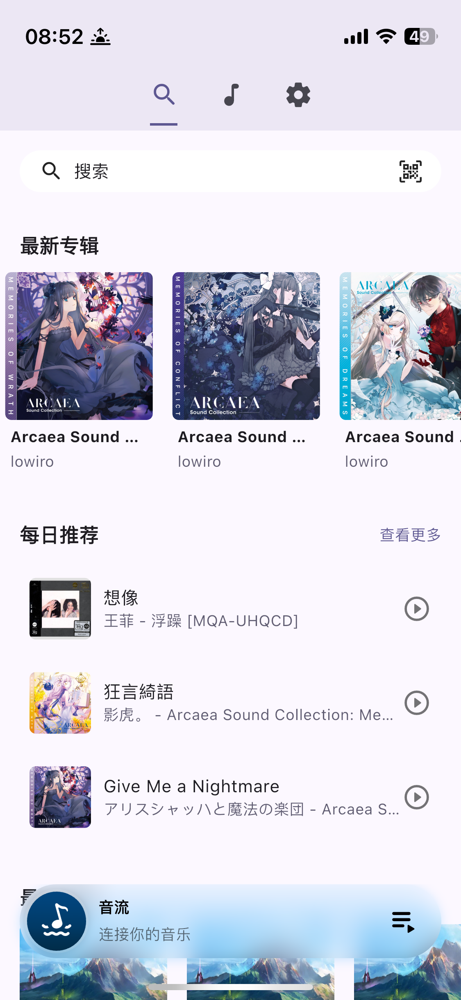